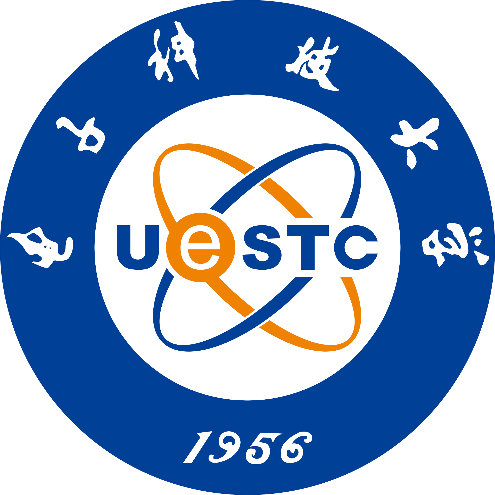

Yunping Zhang (Sherry)
About me My name is Yunping (Sherry), currently a final year PhD candidate from the department of Electrical and
Electronic Engineering at the University of Hong
Kong , supervised by Prof.Edmund Y.
Lam . I successfully completed my PhD program in Fall 2024 and was honored to receive the Dissertation Year Fellowship ,which will conclude in Fall 2025.

|